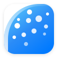

可拆分动画的矢量 Logo · 适用 App 图标 / 网页 HTML / favicon
SVG 矢量格式，从 16px favicon 到 256px 大图，任意尺寸清晰锐利

16px白色 squircle 在任意背景下均可使用，投影保持自然层次
每个部件有独立 ID，可分别动画。点击按钮切换查看
#squircle + #curve + #dots
多种场景的引用方法与动画接入
<!-- 静态引用，不可动画 --> <img src="logo.svg" alt="Logo" width="128" height="128">
.logo { width: 128px; height: 128px; background: url('logo.svg') no-repeat center / contain; }
<!-- SVG favicon，支持高分辨率 --> <link rel="icon" type="image/svg+xml" href="logo.svg">
<!-- 内联到 HTML 后可用 CSS 定位每个部件 --> <svg viewBox="-8 -8 116 116"> <!-- 粘贴 logo.svg 内容 --> </svg> <style> /* 圆点从中心缩放弹出 */ #dot-01 { transform-box: fill-box; transform-origin: center; animation: pop .4s .5s ease-out; } /* 12 个圆点逐个设置 delay */ </style>
// logo-flat.svg 无 squircle 圆角与投影
// 白色满铺背景，内容填满整个正方形
// 平台自动套用圆角蒙版
iOS: 导出 1024×1024 PNG 提交
Android: adaptive icon foreground layer
Web: PWA manifest icon
#squircle 白色圆角背景 + 投影 #logo-content 内容容器（裁剪到 squircle） #curve 蓝色弧形（三次贝塞尔） #curve-fill 渐变填充 #curve-highlight 8px 高光描边 #dots 圆点组（12 个） #dot-01~#dot-12 独立圆点（不同透明度） /* 动画关键 CSS */ transform-box: fill-box; transform-origin: center; /* 透明度通过 --op 变量传递 */ #dot-04 { --op: .8; }